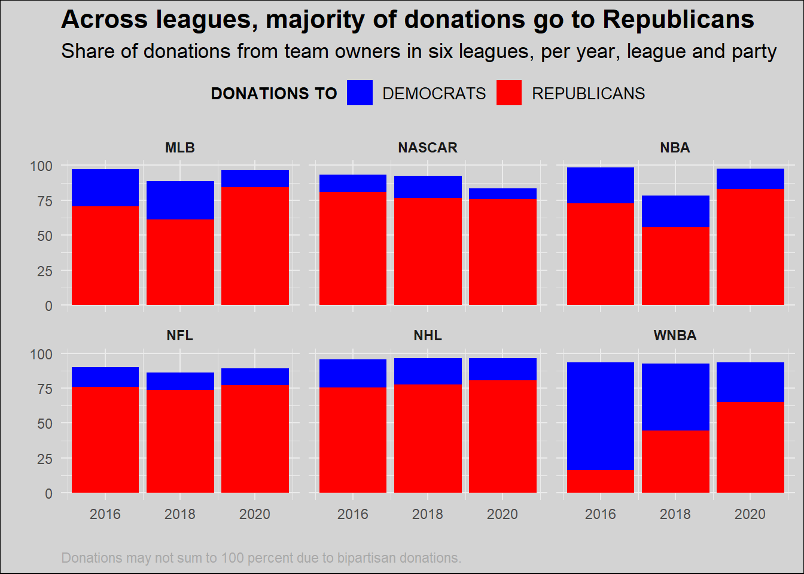

library(ggplot2)
library(tidyverse)── Attaching core tidyverse packages ──────────────────────── tidyverse 2.0.0 ──
✔ dplyr 1.1.4 ✔ readr 2.1.5
✔ forcats 1.0.0 ✔ stringr 1.5.1
✔ lubridate 1.9.3 ✔ tibble 3.2.1
✔ purrr 1.0.2 ✔ tidyr 1.3.1
── Conflicts ────────────────────────────────────────── tidyverse_conflicts() ──
✖ dplyr::filter() masks stats::filter()
✖ dplyr::lag() masks stats::lag()
ℹ Use the conflicted package (<http://conflicted.r-lib.org/>) to force all conflicts to become errorslibrary(grid)
# Example data preparation (replace with your actual data loading)
sports_owners_data <- read.csv("political_donations_by_sport.csv", header = TRUE)
sports_owners_data = pivot_longer(sports_owners_data,
cols = starts_with("TO"),
names_to = "Owner",
values_to = "Total_Donation")
sports_owners_data$Owner = substring(sports_owners_data$Owner, first = 4)
# Plotting using ggplot2
ggplot(sports_owners_data, aes(x = YEAR, y = Total_Donation, fill = Owner)) +
geom_bar(stat = "identity") +
scale_fill_manual(values = c("blue", "red")) + # Example color scale, replace as needed
labs(
title = "Across leagues, majority of donations go to Republicans",
subtitle = "Share of donations from team owners in six leagues, per year, league and party",
x="",
y="",
fill = "DONATIONS TO",
caption = "Donations may not sum to 100 percent due to bipartisan donations."
) +
facet_wrap(~LEAGUE)+
theme_minimal()+
theme(legend.position = "top",
strip.text = element_text(face="bold"),
plot.title = element_text(size = 16, face = "bold"), # Title text size and bold
plot.subtitle = element_text(size = 13), # Subtitle text size
legend.text = element_text(size = 10), # Legend text size
legend.title = element_text(size = 10, face = "bold"),
plot.caption = element_text(hjust=0, color = "darkgray"),
plot.background = element_rect(fill="lightgray"))+
scale_x_continuous(breaks = c(2016, 2018, 2020)) 